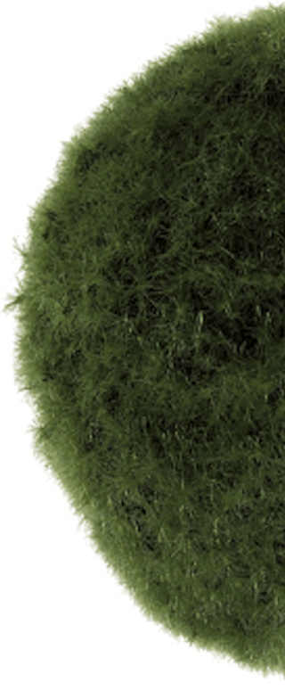
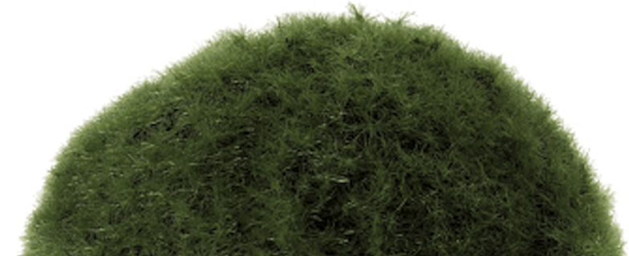

Admission is free and open to the public. If you wish to pre-register you can do so here ⟶

Symposium conceived by
Gyeonggi Museum of Modern Art's, Sooyoung Lee
Nam June Paik Art Center's, Yoonseo Kim
The international symposium series The Gift of Nam June Paik, which will be holding its annual 11th meeting this year, has consolidated the vision of the Nam June Paik Art Center, “The House Where Nam June Paik Lives Long,” by researching, sharing and proposing timely and noteworthy topics on the basis of Paik’s thoughts. This 11th symposium Media Ecology: Revisiting TV Garden is designed to re-evaluate Nam June Paik’s ideas and share the critical investigations of and the researches on the alternatives of the recently emerging concept Anthropocene. Thereby we hope to foresee the future direction of media ecology. Nam June Paik believed that Global Groove offers more fundamental criticism of the environmental pollution than trite documentary films on nature. Media is not simply a part of our environment but our existence. Now is the time we should realize that ecology is not an academic metaphor. We should now explore how media can function as technology for life.
